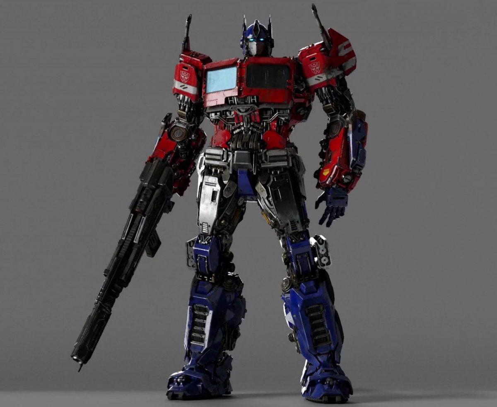

Optimus Prime (anteriormente Orion Pax) es constantemente, si no siempre, representado por tener un fuerte
carácter moral, un excelente liderazgo y una sólida capacidad de tomar decisiones. Posee tácticas militares
brillantes, poderosas artes marciales y avanzadas armas extraterrestres. Optimus Prime tiene un fuerte
sentido de honor y justicia, dedicándose a construir una coexistencia pacífica y mutuamente beneficiosa con
los seres humanos, la protección de la vida y la libertad de todas las especies sensibles.1 Como poseedor
de la actual Matriz de Liderazgo, Optimus Prime es el líder de los Autobots, una facción de una especie
transformer de inteligencia sintética del planeta Cybertron. Los Autobots están llevando a cabo una guerra
civil contra una facción rival de robots transformers llamados Decepticons.
Optimus Prime es generalmente representado como un miembro de una antigua raza de Transformers llamada la
Dinastía de Primes, recibiendo a menudo el título de "El Último Prime" en muchas historias, en el que se
representa como el último de los Primes. En Transformers: Covenant of Primus, se estableció que Optimus
Prime era el último nacido de los Trece Transformers originales. Fue su única chispa y su inspiradora
tranquilidad de "Todos son Uno" que permitió a los Primes reunirse y tener éxito en su batalla contra el
dios del caos, Unicron. Cuando la tragedia terminó por fin, junto a la era de los Primes produciendo la
nueva raza de Transformers descendientes menores, Optimus eligió renacer en el Pozo de Todas las Chispas
como uno de ellos, ya que él conocía sus necesidades más completamente. Todo el recuerdo de su vida pasada
se fue, tomó el nombre de "Orion Pax" y buscó su camino como cualquier otro robot en el nuevo mundo
convirtiéndose en Optimus Prime una vez más al recibir la Matrix de Liderazgo cuando Cybertron enfrentó a un
nuevo enemigo en su antiguo amigo, Megatron y su ejército de seguidores, los Decepticons. Esto trajo una
Gran Guerra a su planeta Cybertron. Los orígenes y la personalidad de Optimus pueden variar dependiendo del
"universo" en el que haya visto. Este origen es el más consistente entre las diversas encarnaciones. Otras
diferencias se enumeran en las secciones respectivas a continuación.
